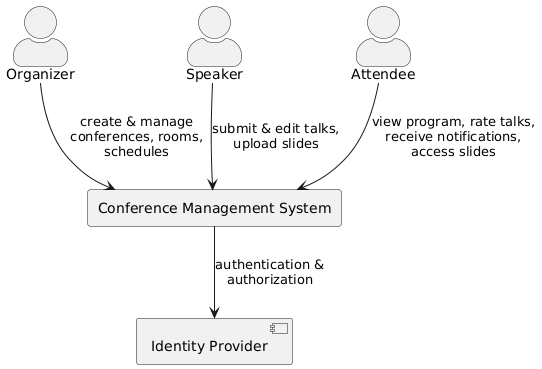
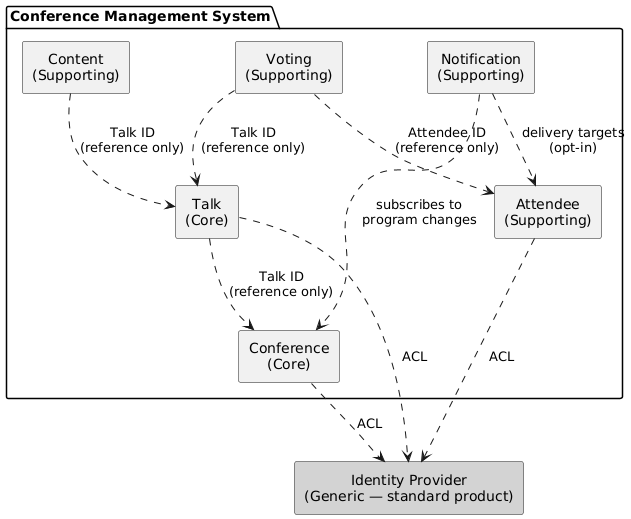
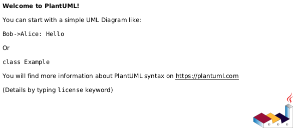

1. Introduction and Goals
1.1. Requirements Overview
Conference Example is a conference management system used by speakers (hundreds), organizers (dozens), and attendees (thousands) to organize and manage conferences in the German-speaking region.
The key features are:
-
Conference program — attendees can view the conference program including times and rooms online
-
Talk management — speakers can manage their talks (submit, edit)
-
Talk rating — attendees can rate the popularity of talks (thumbs up, thumbs down)
-
Real-time notifications — organizers can notify attendees in real time about changes to the conference program (opt-in required)
-
Conference branding — each conference can have its own branding
-
Slide sharing — presentation slides are made available to attendees online
-
Mobile app — a mobile conference app for attendees is envisioned for the future
Beyond the functional scope, the primary purpose of this project is to serve as a comprehensive example system for presentations and workshops covering topics such as Domain-Driven Design, Clean Architecture, software architecture, architecture documentation, architecture tests, and testing.
1.1.1. Additional Context
-
Conferences take place in the German-speaking region.
-
There are only a few support staff members.
-
Very high traffic is expected while a conference is running.
1.2. Quality Goals
| Priority | Quality Goal | Motivation |
|---|---|---|
1 |
Understandability |
The codebase is used in talks and workshops. Concepts must be immediately graspable by an audience encountering the code for the first time. |
2 |
Testability |
The system demonstrates various testing strategies (unit, acceptance, architecture tests). Every layer must be independently testable with minimal setup. |
3 |
Maintainability |
The project evolves alongside new talk topics. Adding new features or demonstrating new patterns must be straightforward without breaking existing examples. |
1.3. Stakeholders
| Role | Name | Expectations |
|---|---|---|
Conference Organizer |
(fictional) |
Can create and publish conferences, manage rooms and schedules, and review submitted talk proposals. |
Speaker |
(fictional) |
Can register, browse published conferences, and submit talk proposals including title, abstract, and tags. |
Conference Attendee |
(fictional) |
Can view the conference program including times and rooms, rate talks (thumbs up / thumbs down), receive real-time notifications about program changes (opt-in), and access presentation slides. |
Presenter / Author |
Andreas Lausen |
Needs a realistic, well-structured example project that can be used across different talks and extended incrementally to demonstrate new architectural concepts. |
Talk Audience |
(various) |
Expects the code to be clean, readable, and representative of the concepts being presented — not oversimplified, but not overwhelming. |
2. Architecture Constraints
| Constraint | Background / Motivation |
|---|---|
Backend implemented in .NET / C# (latest version) |
The author’s primary platform and language. Using the current version ensures the project stays relevant and showcases modern language features. |
Runnable locally without external infrastructure |
Anyone cloning the repository must be able to start the full system — including the databases — on their own machine using Docker. No cloud account, hosted service, or manual setup beyond Docker is required. |
English for all code and documentation |
The project is publicly available and used in talks with an international audience. English as a shared language maximises accessibility. |
Architecture documentation using arc42 and AsciiDoc |
Documentation is treated as code: stored in the repository, version-controlled, and generated reproducibly via |
Freely accessible source code |
The project is open source and publicly hosted. Anyone can clone, run, and extend it — a prerequisite for its use as a teaching and reference example. |
3. System Scope and Context
3.1. Business Context
The Conference Management System interacts with three primary user roles and one external system.

| Actor / System | Interaction |
|---|---|
Organizer |
Creates and configures conferences (rooms, time slots). Assigns accepted talks to the program. Triggers notifications to attendees about program changes. |
Speaker |
Submits and edits talk proposals (title, abstract, tags). Uploads presentation slides for accepted talks. |
Attendee |
Views the conference program (times, rooms). Rates talks (thumbs up / thumbs down). Opts in to receive real-time notifications about program changes. Accesses presentation slides. |
Identity Provider |
External system providing authentication and role-based authorization. The Conference Management System delegates all identity concerns to this provider and consumes tokens/claims via an anti-corruption layer. |
3.2. Technical Context
The system is deployed as a modular monolith: a single ASP.NET Core application that hosts all bounded contexts as in-process modules. Each module owns its own database schema within a shared database instance.

4. Solution Strategy
4.1. Domain-Driven Design
The system follows a Domain-Driven Design approach. The problem space is decomposed into subdomains, each of which is mapped to a solution-space bounded context.
4.1.1. Subdomains
| Subdomain | Type | Description |
|---|---|---|
Conference |
Core |
Managing conferences, rooms, time slots, and the conference program (scheduling). |
Talk |
Core |
Managing talks, speakers, abstracts, and tags. Talks are submitted and curated independently before being assigned to the conference program. |
Voting |
Supporting |
Attendees rate the popularity of talks (thumbs up / thumbs down). High-traffic subdomain during a running conference — requires independent scalability. |
Notification |
Supporting |
Real-time notifications to attendees about changes to the conference program. Attendees must opt in to receive notifications. |
Attendee |
Supporting |
Attendee registration, profiles, and preferences (e.g. notification opt-in). |
Content |
Supporting |
Upload and distribution of presentation slides. Speakers upload slides for their talks; attendees can access them online. |
Identity |
Generic |
Authentication, authorization, and user/role management (speaker, organizer, attendee). This subdomain is best served by a standard identity provider (e.g. Keycloak, Auth0, Entra ID) rather than custom development. |
4.1.2. Mapping Subdomains to Bounded Contexts
Not every subdomain requires a custom-built bounded context. The following table shows how subdomains map to bounded contexts in the solution space.
| Subdomain | Bounded Context | Rationale |
|---|---|---|
Conference |
Conference |
Custom implementation — core domain with conference-specific business rules. |
Talk |
Talk |
Custom implementation — core domain with its own aggregate lifecycle (submit → review → accept). |
Voting |
Voting |
Custom implementation — isolated due to fundamentally different traffic and scaling characteristics (thousands of concurrent votes). |
Notification |
Notification |
Custom implementation — event-driven, asynchronous delivery, own infrastructure concerns (WebSocket, push). |
Attendee |
Attendee |
Custom implementation — manages attendee-specific domain logic (registration, preferences). |
Content |
Content |
Custom implementation — handles file storage and distribution, potentially backed by a CDN or object store. |
Identity |
(no custom BC) |
Addressed by a standard identity provider. An anti-corruption layer in the API translates external identity tokens into domain-specific role concepts. |
4.2. Modular Monolith
The system is built as a modular monolith: all bounded contexts are deployed within a single ASP.NET Core application, but are strictly isolated as modules with clear boundaries.
-
Single API — one ASP.NET Core host exposes all endpoints. Each module registers its own controllers/endpoints, but externally there is one unified API.
-
Schema per module — all modules share one physical database, but each module owns a dedicated database schema. No module may read from or write to another module’s schema directly.
-
In-process communication — modules communicate via defined interfaces (domain events, mediator, or explicit contracts), not via network calls.
-
Extractability — the strict module boundaries are designed so that individual bounded contexts can be extracted into separate services later if scaling or organisational needs require it.
4.3. Clean Architecture
Each custom bounded context follows a Clean Architecture layered structure:
API ──► Application ──► Domain │ ▲ └──────► Persistence ──────┘
-
Domain — aggregates, entities, value objects, domain events. No dependencies on other layers.
-
Application — use cases (commands and queries). Depends on the domain only; does not know Persistence directly.
-
Persistence — shared data models and the
IDatabaseContextinterface. Depends on the domain. -
API — ASP.NET Core entry point, dependency injection, HTTP endpoints. Depends on all other layers.
5. Building Block View
5.1. Whitebox Overall System — Bounded Context Map
The following diagram shows the bounded contexts of the system and their relationships.

5.1.1. Contained Building Blocks
| Bounded Context | Type | Responsibility |
|---|---|---|
Conference |
Core |
Manages conferences, rooms, time slots, and the conference program. Owns the scheduling of talks to slots. References talks by ID only. |
Talk |
Core |
Manages talks, speakers, abstracts, and tags. Talks have their own lifecycle (submit → review → accept) independent of the conference program. |
Voting |
Supporting |
Handles attendee ratings of talks (thumbs up / thumbs down). Designed for high throughput and independent scalability. |
Notification |
Supporting |
Delivers real-time notifications to attendees about conference program changes. Event-driven, asynchronous. Respects attendee opt-in preferences. |
Attendee |
Supporting |
Manages attendee registration, profiles, and preferences (e.g. notification opt-in). |
Content |
Supporting |
Handles upload and distribution of presentation slides. Speakers upload slides linked to their talks. |
Identity Provider |
Generic (external) |
Authentication and role management. Not a custom bounded context — addressed by a standard identity product. Other contexts integrate via an anti-corruption layer that translates tokens/claims into domain-specific roles. |
5.1.2. Important Interfaces
Bounded contexts communicate through well-defined interfaces. The following integration patterns are used:
-
ID references — contexts reference entities from other contexts by ID only (e.g.
TalkId,AttendeeId). No shared domain models. -
Domain events — the Notification context subscribes to domain events from the Conference context (e.g.
ProgramChanged) to trigger attendee notifications. -
Anti-corruption layer (ACL) — contexts that interact with the external identity provider translate external claims into internal role/permission concepts.
6. Runtime View
7. Deployment View
7.1. Infrastructure Level 1

8. Cross-cutting Concepts
9. Architecture Decisions
9.1. Architecture Decision Records
9.1.1. ADR-1: Modular Monolith as Deployment Architecture
| Attribute | Value |
|---|---|
Status |
Accepted |
Context |
The system consists of multiple bounded contexts (Conference, Talk, Voting, Notification, Attendee, Content). A deployment strategy must be chosen that balances modularity, operational simplicity, and the ability to evolve the architecture over time. |
Decision |
Deploy all bounded contexts as modules within a single ASP.NET Core application (modular monolith). Each module owns its own database schema within a shared database instance. Modules communicate in-process via defined interfaces (domain events, mediator, or explicit contracts) — not via network calls. |
Rationale |
|
Consequences |
|
9.1.2. ADR-2: Event Sourcing and CQRS
| Attribute | Value |
|---|---|
Status |
Accepted |
Context |
The system serves as a demonstration project for talks and workshops, as well as a real-world example of modern architectural patterns. For conference and talk management, traceability of changes and efficient queries for different views are relevant concerns. |
Decision |
Adopt Event Sourcing combined with CQRS (Command Query Responsibility Segregation). Aggregate state is not stored as a current snapshot but as an immutable sequence of domain events. The write and read sides are explicitly separated: commands mutate state via the event store, while queries are served by optimised read models (projections). |
Rationale |
|
Consequences |
|
9.2. Open Decisions
9.2.1. OD-1: Frontend Technology
| Attribute | Value |
|---|---|
Status |
Open |
Question |
Which frontend technology should be used for the user interface? |
Options Considered |
|
Decision Criteria |
Developer experience, alignment with the .NET backend ecosystem, suitability as a demonstration technology for talks and workshops. |
9.2.2. OD-2: Frontend Boundary — Shared vs. Per Bounded Context
| Attribute | Value |
|---|---|
Status |
Open |
Question |
Should there be a single shared frontend application, or a separate frontend application per bounded context? |
Options Considered |
|
Decision Criteria |
Degree of desired autonomy between bounded contexts, operational complexity, and value as a demonstration of DDD and Clean Architecture principles. |
9.2.3. OD-3: Event Store Persistence Technology
| Attribute | Value |
|---|---|
Status |
Open |
Question |
Which persistence technology should be used as the event store? |
Options Considered |
|
Decision Criteria |
Operational simplicity, .NET integration, suitability as a demonstration technology, and alignment with the existing infrastructure. |
9.2.4. OD-4: Read Model Persistence Technology
| Attribute | Value |
|---|---|
Status |
Open |
Question |
Which persistence technology should be used to store and serve read models (projections)? |
Options Considered |
|
Decision Criteria |
Query complexity, read performance requirements, operational simplicity, and consistency with the chosen event store technology. |
9.2.5. OD-5: Identity Provider
| Attribute | Value |
|---|---|
Status |
Open |
Question |
Which identity provider should be used for authentication and role management? |
Options Considered |
|
Decision Criteria |
Operational simplicity (self-hosted vs. managed), cost, alignment with the .NET ecosystem, ease of local development (Docker-based setup), and suitability as a demonstration technology. |
10. Quality Requirements
10.1. Quality Tree
10.2. Quality Scenarios
11. Risks and Technical Debts
| Risk / Technical Debt | Description | Mitigation |
|---|---|---|
12. Glossary
| Term | Definition |
|---|---|